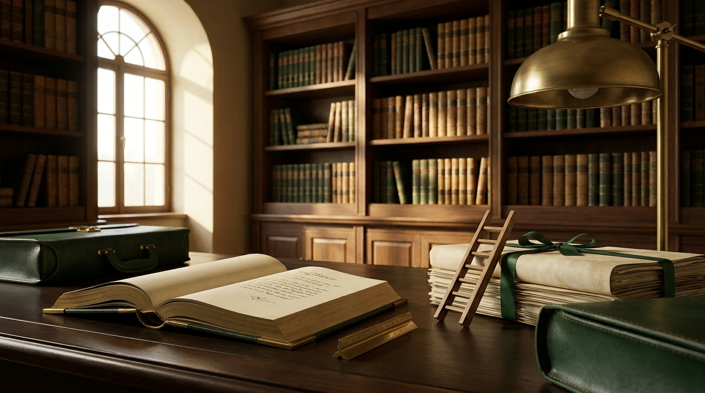

Caduta dalla scala: il committente risponde per ingerenza anche con il lavoratore autonomo
La Cassazione penale ha confermato la condanna di un committente per la caduta di un operaio autonomo da una scala. Aveva fornito attrezzatura inadeguata, un trabattello sarebbe stato necessario. La pronuncia ribadisce un principio rilevante: l'obbligo di sicurezza non si ferma ai confini del lavoro subordinato e l'ingerenza del committente nell'esecuzione genera responsabilità penale.

Il fatto
Un operaio, lavoratore autonomo, cade da una scala durante l'esecuzione di lavori commissionati. Lo strumento corretto sarebbe stato un trabattello, ossia una struttura mobile su ruote che garantisce una base stabile e protezioni laterali. Al lavoratore era stata invece messa a disposizione una semplice scala, inadatta al tipo di intervento.
La Cassazione Penale, Sezione IV, ha confermato la responsabilità del committente. Il punto centrale non è il tipo di contratto, ma il comportamento concreto di chi affida i lavori: avere fornito mezzi inadeguati e avere influito sulle modalità esecutive integra un'ingerenza che fa sorgere obblighi di protezione.
Inquadramento normativo
Il riferimento è il Testo Unico sulla sicurezza, il D.Lgs. 81/2008. L'art. 26 disciplina gli obblighi del committente nei contratti d'appalto, d'opera e di somministrazione, imponendo cooperazione e coordinamento sulle misure di prevenzione. L'art. 71 impone che le attrezzature di lavoro siano idonee al compito e conformi ai requisiti di sicurezza.
La giurisprudenza distingue da tempo il committente "inerte" da quello che si ingerisce nell'organizzazione del lavoro. Quando il committente sceglie i mezzi, detta le modalità o gestisce concretamente l'attività, assume una posizione di garanzia: diventa cioè titolare dell'obbligo giuridico di impedire l'evento dannoso. La forma autonoma del rapporto non lo esonera, perché ciò che conta è il dato sostanziale dell'ingerenza, non l'etichetta contrattuale.
Implicazioni pratiche
La pronuncia tocca chiunque affidi lavori a terzi: imprese, professionisti, privati che commissionano interventi edilizi o di manutenzione.
Il messaggio è netto. Affidare un lavoro a un autonomo non significa scaricare ogni rischio. Se il committente fornisce le attrezzature, queste devono essere idonee. Se interviene sulle modalità di esecuzione, risponde delle conseguenze di scelte sbagliate.
Il confine è delicato. Da un lato il committente non deve sostituirsi al datore di lavoro o all'appaltatore nella gestione ordinaria. Dall'altro, ogni ingerenza concreta sposta su di lui una quota di responsabilità. Fornire una scala al posto di un trabattello è proprio questo: una decisione operativa che incide sulla sicurezza.
La responsabilità qui è penale, non solo civile. Significa esposizione a procedimenti per lesioni colpose o, nei casi più gravi, omicidio colposo, con tutto ciò che ne deriva sul piano personale e reputazionale.
Cosa fare in concreto
- Verifica l'idoneità delle attrezzature che metti a disposizione: se fornisci mezzi, assicurati che siano conformi e adeguati al lavoro specifico.
- Evita ingerenze non necessarie: lascia all'appaltatore o al lavoratore autonomo la scelta delle modalità tecniche, salvo obblighi di coordinamento.
- Formalizza il coordinamento previsto dall'art. 26: documenta lo scambio di informazioni sui rischi e le misure adottate.
- Conserva la documentazione su attrezzature fornite, comunicazioni e verifiche: in sede penale la prova del comportamento diligente è decisiva.
- Richiedi una valutazione preventiva quando affidi lavori in altezza o ad alto rischio, per definire chi fornisce cosa e con quali responsabilità.
Un principio da non sottovalutare
La sentenza non amplia gli obblighi del committente: ne ricorda la natura sostanziale. La sicurezza sul lavoro non si misura sulla forma del contratto, ma sui comportamenti reali. Chi affida lavori e poi interviene nella loro esecuzione non può poi invocare l'autonomia del prestatore per sottrarsi alle conseguenze.
Consigliamo, soprattutto a imprese e committenti che operano con catene di appalti e prestazioni autonome, di rivedere le prassi di fornitura delle attrezzature e di coordinamento. È un'area in cui la differenza tra diligenza e responsabilità penale si gioca su dettagli operativi spesso trascurati.
Disclaimer
Contributo informativo a cura di Tamburro & Partners - Avv. Giuseppe Tamburro. Non costituisce parere legale.
Ogni storia di lavoro ha i suoi tempi.
Se gestisci HR e vuoi un confronto su contenzioso, ispezioni o licenziamenti, scrivi allo studio. Ti rispondiamo entro un giorno lavorativo.